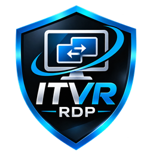
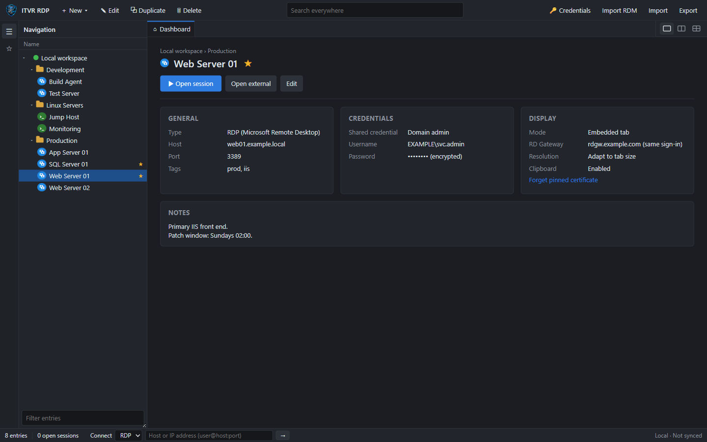

A connection manager for Windows and macOS. Open your RDP and SSH sessions as tabs, view up to four at once, move files with built-in SFTP, and keep every login in one place — without juggling a separate window for every server.

Screenshot uses example servers.
RDP and SSH, organised in a tree, opened in tabs, secured by default.
Remote desktops open inside the app, not in separate windows. Network Level Authentication, clipboard, Ctrl+Alt+Del, and a desktop that resizes to fit its tab.
Full terminal tabs with password or private-key sign-in, resizing and scrollback — alongside your RDP sessions.
Watch several servers at once. Drag tabs onto panes, click to focus. Sessions stay connected as you change the layout.
Open a file panel beside any SSH session. Upload and download files and whole folders, rename, delete — or just drag and drop.
Save a login once and link it to as many servers as you like. Change the password in one place and every entry follows.
Reach servers behind a Remote Desktop Gateway over HTTPS with NTLM sign-in (Windows Server 2016 or later), with the same or a separate login.
Bring in your RDM folders and entries from an XML, JSON or CSV export. Preview first; nothing changes until you confirm.
Saved passwords are encrypted with Windows or macOS secure storage. Server certificates and SSH host keys are pinned, and exports never contain passwords.
Folders, tags, favourites, search and a quick-connect bar. Dark interface, light on resources, no account needed.
An installer or a portable copy — your choice.
Pick the Windows installer, a portable ZIP, or the macOS build for your Mac.
Run the installer, or unzip the portable version anywhere — a folder or a USB stick.
Create RDP and SSH entries, link a shared credential, or import your Remote Desktop Manager export.
Double-click a server to open it in a tab. Switch to split view to see several at once.
Download and run it on your own computer. Version 1.0.0.
Windows 10/11 · no admin rights needed · ~120 MB
ITVR RDP.exe. Starts in about a second after the first run.
.exe that unpacks itself on every launch, so it takes 20–30 seconds to start. Use the ZIP if you can.
Install ITVR RDP.command. If macOS blocks it, right-click it, choose Open, then Open again. It copies the app to Applications and starts it.xattr -cr "/Applications/ITVR RDP.app" and
codesign --force --deep --sign - "/Applications/ITVR RDP.app" in Terminal (the second command comes with Apple's free Command Line Tools).
Remote desktops open inside the app, so nothing else is required.
Questions, feedback, or something not working? Get in touch .